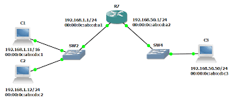

Proxy ARP, bir yönlendiricinin (router) veya cihazın, başka bir ağdaki cihazlar adına ARP yanıtı vermesine olanak tanıyan bir tekniktir.
Bir cihaz, belirli bir IP adresine sahip başka bir cihazın MAC adresini öğrenmek için ARP Request (ARP isteği) gönderir.
Hedef cihaz farklı bir ağdaysa, yönlendirici (router) veya Proxy ARP etkinleştirilmiş bir cihaz kendini o IP adresinin sahibi gibi göstererek ARP Reply (ARP yanıtı) gönderir.
İsteği yapan cihaz, artık bu yönlendiriciye veri göndermeye başlar ve yönlendirici paketi hedef ağa iletir.
Farklı ağları birbirine bağlama → Varsayılan ağ geçidi tanımlamaya gerek kalmadan iki farklı alt ağı konuşturabilir.
Ağ segmentlerini genişletme → Aynı ağ gibi davranarak cihazların doğrudan iletişimini sağlar.
IP adresi yapılandırması olmayan cihazlar için çözüm sunma → Bazı eski sistemlerde manuel yapılandırma yerine otomatik iletişim sağlar.
Güvenlik açığı oluşturabilir → ARP Spoofing saldırılarına açık olabilir.
ğ trafiğini artırabilir → Büyük ağlarda gereksiz ARP trafiği oluşturabilir.
Yönetimi zor olabilir → DHCP veya statik yönlendirme gibi çözümler daha güvenli ve yönetilebilir olabilir.
Ana Sayfaya Dön